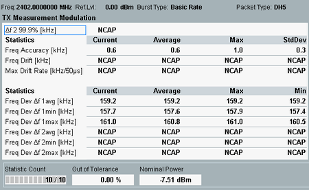
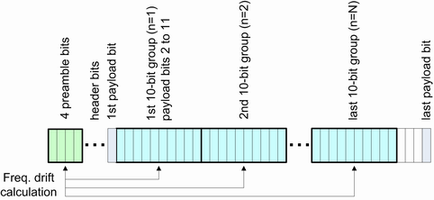
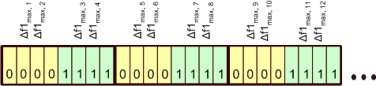

The "TX Measurement Modulation" view shows an overview of modulation results and the corresponding statistics. Some of the results require a special payload "Pattern Type"; see "Modulation Measurements".

The "TX Measurement Modulation" table contains the following values:
Frequency deviation value Δf2 above which 99.9% of all measured Δf2 values occur.
A Δf2 99.9% value of 115 means that 99.9% of all measured Δf2 values are above or equal to 115 kHz.
This measurement spans over all packets with sufficient payload length.
Δf2 99.9% measurement requires a payload length of at least 2 bytes and payload pattern "10101010".
See also "Freq. Dev. Δf2".
The frequency accuracy is the difference between the nominal channel frequency fTX and the initial carrier frequency f0, measured over the packet preamble:
Freq. accuracy = f0 – fTX
The preamble is a 4-bit pattern "1010" or "0101"' at the beginning of each packet. To measure the initial carrier frequency, the R&S CMW includes by measurement also preamble of 4 μs (bit lengths) in total. It means the R&S CMW integrates also the frequency of the demodulated signal from the center of the first preamble bit to the center of the first bit following the preamble.
No payload bits are involved in the frequency accuracy calculation.
Maximum difference between the measured initial carrier frequency f0, and the carrier frequencies fn, where n = 1 ... N, measured within the payload.
To obtain the latter, the payload is grouped into 10-bit groups as shown in the following figure:

Frequency drift is then calculated as:
Freq. drift = fm– f0, where m = arg maxn ∈ {1, ..., N}(|fn– f0|)
This measurement does not include the payload header or the CRC bits.
The first bit and incomplete 10-bit groups are not considered for the calculation.
This measurement requires payload pattern "10101010" and a minimum payload length of 2 bytes. Otherwise this measurement result is invalid.
Maximum of the drift rate anywhere within the packet payload. The drift rate is calculated based on the difference in carrier frequencies fn between any two 10-bit groups separated by 50 μs:
Max. drift rate = (fm – fm-5), where m = arg maxn ∈ {6, ..., N}(|fn– fn-5|)
This measurement requires payload pattern "10101010" and a minimum payload length of 8 bytes. Otherwise this measurement result is invalid.
Difference between the modulated frequency and the observed carrier frequency for packets carrying a "11110000" payload pattern.
To obtain the Δf1 results in accordance with the test specification for Bluetooth wireless technology, the R&S CMW
- Divides the payload into "00001111" 8-bit subsequences,
- Each bit is oversampled four times,
- For each subsequence, the average frequency f avg is calculated,
- For each of the "00001111" 8-bit subsequences, the frequency deviation of bits 2, 3, 6 and 7 from favg are calculated as Δf1max, i.

- Δf1 avg is the average of all Δf1max, i values in the payload,
- Δf1 max is the largest of all Δf1max, i values in the payload,
- Δf1 min is the smallest of all Δf1max, i values in the payload.
The first 4 bits and incomplete 8-bit groups (the last 4 bits) are not considered for the calculation.
This measurement requires payload pattern "11110000" and a minimum payload length of 2 bytes. Otherwise this measurement result is invalid.
Difference between the modulated frequency and the observed carrier frequency for packets carrying a "10101010" payload pattern.
- The R&S CMW considers "01010101" bit sequences.
- The frequency deviation for each bit is defined as the maximum deviation within the bit period.
- Frequency deviations Δf2max, i are calculated for all bits in the considered "01010101" bit sequences. The calculation of the "Δf2 99.9%" result is based on these deviations.
- Δf2 avg is the average of all Δf2max, i values in the payload,
- Δf2 max is the largest of all Δf2max, i values in the payload,
- Δf2 min is the smallest of all Δf2max, i values in the payload.
The first bit and incomplete 8-bit groups (the last 7 bits) are not considered for the calculation.
This measurement requires payload pattern "10101010" and a minimum payload length of 2 bytes. Otherwise this measurement result is invalid.
Average burst power during the carrier-on state, measured within the "Basic Rate Filter Bandwidth".
Additional results in automatic detection mode If automatic burst detection is active ("Input Signal > Detection Mode: Auto"), the "Modulation Scalars" view also shows the detected packet type, pattern type, and payload length. Automatic detection mode is indicated in the upper right corner. In "ACP 79 Channels" mode, the number of off slots has to be displayed. The "Pattern Yield" is the percentage of detected packets with a specific payload pattern type. The modulation ratio Δf2 avg / Δf1 avg is the ratio of the smallest measured frequency deviation min(Δf2 avg) to the largest one max(Δf1 avg). This value requires at least one BR packet with a "11110000" and one with a "10101010" payload pattern; see definition of Δf2 and Δf1 above. |
For query of the results via remote control, see "Modulation Measurement Results (BR)".